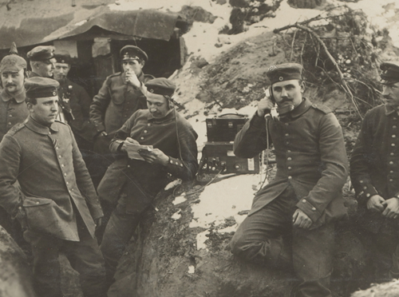

I meccanismi di difesa dell'Io
In via preliminare, ci sembra utile individuare i motivi della difesa. Da che cosa si difende l’Io? Una risposta potrebbe essere quella che si riferisce al conflitto o, più esattamente, al conflitto neurotico.
Aggiornato il 16|03|2020
22 minuti di lettura
Se facciamo risalire i meccanismi difensivi dell’Io al conflitto neurotico, siamo costretti ad entrare nel campo delle psiconevrosi. Non è che siamo obbligati a fissare l’eziologia dei meccanismi di difesa al conflitto neurotico perché ci
sono dei meccanismi difensivi che non sono secondari ad una nevrosi. Quando la pulsione raggiunge lo scopo, anche se si osserva la presenza di un meccanismo difensivo, possiamo dire che il tutto si è svolto nell’ambito della normalità.
Tuttavia, in questo caso, dobbiamo postulare la trasformazione dello scopo originario della pulsione in un altro, più adeguato ai fini del soddisfacimento; e questo per motivi oggettivi o soggettivi.
Ma procediamo con ordine.
Freud in “L’Io e l’Es” e in “Nevrosi e psicosi” fa risalire il conflitto neurotico allo scontro fra due impulsi, vale a dire, tra l’Es e l’Io. Fenichel, nel suo “Trattato di psicoanalisi”, esplicitando la
formulazione freudiana, spiega che quando si crea un’ arginatura dell’Io, nei confronti della pulsione che vuole trovare uno sbocco, vale a dire, la gratificazione, si crea un conflitto che, a lungo andare, può portare alla nevrosi.
Il fatto è che l’uomo cerca, naturalmente, di sfuggire al dolore e, se proprio è costretto a patirne, di allontanarsene il prima possibile, per ripristinare l’omeostasi interna
E’ questo un principio biologico, prima ancora che psicologico.
E così, già dai primi mesi di vita, il bambino attiva delle difese per proteggersi dal dolore. In senso generale, una prima difesa che il bambino attiva, aiutato in ciò dagli adulti, è quella che si riferisce alla vita. Con ciò vogliamo dire
che il bambino, in quanto non ha ancora gli strumenti per padroneggiare e tollerare la realtà, se la inventa, la trasforma e la “nega” con la fantasia. E’ aiutato in ciò, come dicevamo prima, dagli adulti: le più belle e convincenti fiabe
sono state scritte, appunto, dagli adulti. Con le favole si entra in un mondo dove i prati sono più verdi di quelli veri, i fiori hanno colori più variopinti e vividi e, poi, allontanandoci da queste immagini bucoliche, prevale la giustizia,
il coraggio, l’ottimismo e, naturalmente, il lieto fine dove tutti “vissero felici e contenti”.
Senza dubbio, queste invenzioni hanno un valore difensivo e, in quanto funzionano, hanno un valore adattivo.
In questi casi, non si può parlare di conflitto: il bambino, non solo accetta la favola, ma pretende che sia sempre la stessa, che non venga cambiata neanche una virgola tutte le volte che è raccontata.
Tuttavia, se questo è senz’altro vero per qualche tempo, è altrettanto vero che il bambino, a partire da un certo punto del suo percorso evolutivo, vuole anche la verità. E allora si chiede, e vuole chiarimenti dall’adulto, se la befana
viaggia davvero a cavalcioni sulla sua scopa magica, e Babbo Natale porta davvero i doni con la slitta volante trainata da magiche renne che volano di casa in casa a portare i doni ai bambini buoni. E naturalmente, ad un certo punto, si è
costretti, da parte dell’adulto, a confessare che si tratta di fantasie, e , da parte del bambino, a prendere atto di questa amara verità.
A partire da questo momento, per difendersi dalla presa di coscienza di verità spiacevoli, i meccanismi difensivi devono esser più plausibili e più sofisticati. Perché questo è il punto. I meccanismi difensivi dell’Io vogliono attenuare la
fatica del vivere, sfuggire a sensazioni spiacevoli o francamente dolorose.
A questo punto si pone un problema. I meccanismi difensivi sofisticati e plausibili fanno correre il rischio di falsificare la realtà. E’ esattamente ciò che succede nell’infanzia con le fiabe: solo che qui la falsificazione della realtà
rientra nel controllo consapevole dell’adulto il quale gradualmente confessa al bambino che ciò che gli è stato raccontato non è vero. Ma all’adulto chi dice che le falsificazioni della realtà e, soprattutto, le falsificazioni della realtà
psichica interna sono fantasie, cioè, non sono vere? Evidentemente, è l’adulto stesso che se lo deve dire, confrontandosi con se stesso, e cioè con le sue illusioni, gli inganni e gli autoinganni. Come può portare a compimento un’operazione
del genere? Sostituendo il principio del piacere con quello di realtà. Il primo principio tende al soddisfacimento del piacere a qualsiasi costo e in forma immediata, il secondo conosce l’attesa e consente il soddisfacimento dei bisogni
realistici. Detto in altri termini, il principio del piacere vuole l’uovo subito, quello di realtà preferisce la gallina domani e a patto che ci siano pollai disponibili.
Detto così, le cose sembrano facili. In realtà è talmente difficile non ingannarsi, non difendersi, abbandonare le proprie armature, che in alcuni casi il rimedio (la difesa) è peggiore del male (la verità). E’ il caso dei meccanismi di
difesa patogeni che si osservano nelle psiconevrosi.
Ora possiamo passare all’elencazione e descrizione dei meccanismi di difesa. Essi sono: la sublimazione, la negazione, la proiezione, l’introiezione, la rimozione, la formazione reattiva, l’annullamento, l’isolazione, la regressione.
Sublimazione
Abbiamo preferito inserire la “Sublimazione” al primo posto tra i meccanismi difensivi perché questa difesa può essere considerata normale. Le altre , pur potendole osservare in persone normali, più facilmente si trasformano in difese
patogene ed è per questo che sono presenti, in varia misura, nelle psiconevrosi.
Nella sublimazione, come in tutti i meccanismi difensivi, la pulsione cambia lo scopo o l’oggetto, come osserva Fenichel nell’opera citata sopra, ma, a differenza delle difese patogene, realizza alla fine la sua scarica.
In effetti il punto è proprio questo. I meccanismi difensivi dell’Io, nel tentativo di sfuggire a stati d’animo penosi, solitamente “negano” o “proiettano” o “rimuovono” l’affetto legato alla pulsione, con la conseguenza che la loro carica,
controllata dalla controcarica psichica dell’Io , non riesce a manifestarsi e quindi a consumarsi.
Nella sublimazione, invece, la carica legata alla pulsione, dopo un’adeguata trasformazione dello scopo, si consuma in un’attività socialmente accettata e con significati e contenuti adattivi per il soggetto.
Volendo esplicitare meglio quanto abbiamo detto, se si vuole sublimare una pulsione aggressiva è opportuno, intanto, ritirare l’energia dalla pulsione, successivamente attivare un’operazione psichica che possa consumare l’energia delle
cariche aggressive attraverso il nuovo processo psichico. In questo modo, attraverso la sublimazione, si può evitare di esibire un comportamento aggressivo canalizzando, per esempio, l’energia della pulsione in un’intensa attività
intellettuale. In questo caso l’Io trova comunque il suo soddisfacimento, non già nella gratificazione diretta, ma nel suo derivato pulsionale.
Perché un’operazione del genere sia possibile, gli impulsi pregenitali, sperimentati nell’infanzia, devono essere trasformati in genitalità. E questo perché, mentre gli impulsi pregenitali sono trattenuti dalle controcariche psichiche dell’Io
che creano uno stato di arginatura, quelli genitali trovano una canalizzazione libera che consente o la scarica diretta o quella indiretta, dopo la modificazione dello scopo, attraverso appunto la sublimazione.
Negazione
Con questo meccanismo difensivo, antico in senso filogenentico ed ontogenetico, si cerca di sfuggire a stati d’animo di sofferenza, negando la realtà spiacevole che ha provocato lo stato di disagio.
Quella della negazione è una difesa che si può osservare abbastanza frequentemente nei bambini. Ciò è dovuto al fatto che il bambino, intanto, è regolato dal principio del piacere che non gli consente di tollerare frustrazioni troppo forti e
a dilazionarle e, poi, perché la sua capacità di operare un esame di realtà corretto è limitata o, quando è troppo piccolo, assente.
Da quanto detto si capisce facilmente che mano a mano che l’Io del bambino si sviluppa, certe grossolane alterazioni della realtà diventano sempre più difficili, perché sempre meno verosimili.
Messe così le cose, si può dire che la forza della negazione è inversamente proporzionale al grado di maturità e forza dell’Io. Perfino nel bambino si può osservare una negazione “leggera”, nel senso che è presente, sul piano della coscienza,
la capacità di distinguere tra fantasia e realtà. Il bambino, attraverso il gioco, può negare la realtà e rifugiarsi nella fantasia, rimanendo, tuttavia, consapevole del fatto che sta giocando e le cose stanno in tutt’altro modo.
Nell’adulto la difficoltà o impossibilità ad accettare quel tipo di realtà spiacevole sottende una scissione dell’Io, che non necessariamente deve avere contenuti psicotici, in quanto limitata e transeunte, ma che rappresenta comunque uno
scollamento tra la parte cosciente dell’Io e la dimensione pulsionale inconscia. Questo significa che nel meccanismo della negazione è presente anche quello della rimozione. Il soggetto preferisce non ricordare, vale a dire, censurare le
tracce mnestiche che potrebbero consentirgli una corretta analisi della realtà anche se spiacevole, anziché riconoscerla e conseguentemente accettarla.
Un paziente in trattamento psicoanalitico , riferiva al suo analista che essendo uscito dal ristorante insieme agli amici con i quali si era intrattenuto nel corso della serata, discutendo dell’opportunità di concludere la serata in discoteca
aveva avuto la netta sensazione che quel discorso era stato già fatto e si era concluso con la decisione di andare tutti a casa. In realtà le cose non finirono così. Si decise, per come si era convenuto, di recarsi in discoteca. L’analisi
dimostrò che il paziente, volendo andare a casa, aveva rimosso gli accordi della comitiva prima della cena e negò l’evidenza, cioè la volontà del gruppo di concludere la serata in discoteca. Il fenomeno del dejà vu, ricordato da Fenichel (op.
cit.), attraverso l’utilizzazione di ricordi schermo secondo il meccanismo del comando a ricordare, gli aveva dato l’illusione di poter andare a dormire, rimuovendo i veri ricordi (gli accordi presi in precedenza), negando l’evidenza( la
volontà precisa da parte degli altri).
Proiezione
Marta Olivetti Belardinelli, nel suo bel libro “Identificazione e proiezione”, cita un passo dei “Racconti popolari serbi” di Franjo Tragrancic per introdurre e spiegare il meccanismo difensivo della proiezione:
Un tale che aveva mal di denti incontrò un altro che stava urlando a squarciagola e gli chiese che cosa avesse; e quando il poveretto gli rispose che una vipera l’aveva morso, osservò:- credevo che ti facesse male un dente!-.
Come si può vedere, l’artista spesso coglie, intuitivamente, con la sua sensibilità, certe verità importanti. In questo caso è colto e descritto, in modo semplice ed efficace, il meccanismo della proiezione.
Per cogliere i contenuti di questo meccanismo difensivo, bisogna rifarsi alle primissime esperienze del bambino collegate all’atto del mangiare.
I cibi appetibili, solitamente, vengono “ingoiati”, quelli disgustosi, al contrario, vengono “sputati”. C’è da dire, però, che la valutazione di appetibilità non sempre dipende dalla bontà del cibo; in alcuni casi, i motivi che portano al
rifiuto del cibo, perché non appetibile, sono nascosti e complessi. Il bambino inappetente o l’adulto anoressico rifiutano il cibo non perché disgustoso in sé ma per i significati che l’atto del mangiare assume nel soggetto. E così un bambino
che rifiuta il cibo può inconsciamente rifiutare la madre che dà il cibo, l’adulto anoressico può combattere gli impulsi orali cannibalici e quindi ostili che l’atto del mangiare, nei suoi vissuti inconsci, rappresenta.
Il fatto che quando si va al ristorante, solitamente, si mangia di più può dipendere, sì, dall’atmosfera ludica che anima i membri della comitiva che si è recata al ristorante; un altro motivo, però, può essere rintracciato nel fatto che non
si conosce il cuoco. L’anonimato della relazione cuoco-commensali rende improbabile l’attivazione di quei vissuti di ambivalenza o di franca ostilità che spesso sono alla base dei fenomeni di inappetenza. L’assenza di ostilità, in questi
casi, può favorire processi psichici di tipo introiettivo che portano a mangiare, in alcuni casi, ben oltre il bisogno fisiologico del cibo. E’ come se il soggetto voglia indugiare nel piacevolezza del rapporto con il fantasma materno antico,
quello della madre buona che dà il latte e che solleva dall’angoscia e dal senso di abbandono e di morte.
Questa interpretazione può spiegare la dinamica di fondo del meccanismo della proiezione. Alcuni soggetti tendono a "sputare" contenuti psichici personali. Tuttavia, l’atto del portare fuori un contenuto psichico spiacevole non può essere
sufficiente. Allora, se il contenuto, per esempio, è un sentimento di forte ostilità inaccettabile alla coscienza, il soggetto non solo lo "sputa", ma, per liberarsene anche dal punto di vista della presa di coscienza, lo attribuisce ad
un’altra persona attraverso i meccanismo, appunto, della proiezione.
Introiezione
L’introiezione, prima ancora di essere una difesa, è un meccanismo psichico che si può osservare nei primissimi mesi di vita del bambino. Nel primario rapporto madre-figlio, in questa diade importantissima dalla quale dipende la qualità del
processo evolutivo, si radicano vissuti che spesso perdurano per tutta la vita. Per esempio, è abbastanza riconosciuto un po’ da tutti che la radice dell’ottimismo o del pessimismo risiede nell’esperienze, in senso emotivo-affettivo, fatte
dal bambino nel corso del suo primo anno di vita. All’inizio della sua vita, il bambino vive una forte dipendenza dalla madre, per cui si può dire che tra madre e figlio, nonostante sia stato reciso il cordone ombelicale, c’è una vera e
propria simbiosi. Nella prima fase del rapporto, il bambino considera il seno della madre come una propaggine del proprio corpo; la presenza della madre che dà il latte è assimilata alla vita, la sua assenza alla morte. In questa fase orale
del processo evolutivo l’atto dell’ingoiare, del mangiare, dell’incorporare ha una valenza psicologica estremamente importante al punto da condizionare, in positivo o in negativo, il successivo processo evolutivo.
Come accade sempre, i vissuti psichici intensi non si dimenticano, anzi tendono a riattivarsi in occasione di situazioni forti che richiedono notevole dispendio di energie.
All’inizio, l’introiezione non solo non è una difesa contro gli istinti, al contrario è la gratificazione immediata e completa dell’istinto. Il senso di benessere che scaturisce da questa gratificazione, che diventa ad un certo punto un vero
e proprio vissuto di onnipotenza, porta il bambino a conservare l’oggetto che garantisce il benessere ed a identificarsi con lui. Tutto questo è positivo. Senza introiezioni e successive identificazioni, il bambino è destinato ad abortire il
processo evolutivo. Ma, come osserva Fenichel (1951)
l’incorporazione, benché sia un’espressione "d’amore”, distrugge concretamente gli oggetti in quanto tali - come cose indipendenti nel mondo esterno
Il bambino ad un certo punto si rende conto di questo fatto e ne approfitta, utilizzando l’introiezione con propositi ostili. Nel corso della vita la relazione oggettuale si modifica, diventa più transitiva, tiene conto del punto di vista e
cioè dei bisogni dell’altro: ma “ se incontra delle difficoltà, può regredire all’identificazione, ed ogni ulteriore scopo istintivo può regredire all’introiezione.
L’uso dell’introiezione come meccanismo di difesa, offre un esempio di come meccanismi primitivi ed automatici vengano domati ed usati dall’Io per i suoi propositi. (ibid.).
Rimozione
La rimozione fu il meccanismo di difesa più studiato o, per prima, studiato da Freud. Ciò è dovuto al fatto che la rimozione è il meccanismo di difesa principale della nevrosi isterica. In questo senso non sorprende l’interesse di Freud per
questo tipo di difesa, giacché la prima nevrosi di cui egli si occupò fu appunto quella isterica. Da considerare, di passaggio, che proprio attraverso lo studio dell’isteria, Freud arrivò alla psicoanalisi vera e propria, passando dall’ipnosi
e dal metodo catartico(il caso di Elisabeth von R.).
Nel trattamento dell’isteria, Freud si accorse, già al tempo del trattamento ipnotico, che le sue pazienti non ricordavano gli eventi patogeni e, soprattutto, le emozioni connesse agli eventi che poi avevano determinato i sintomi. Scoprì,
altresì, che il riportare alla coscienza gli eventi responsabili della nevrosi, sia pure in stato di trance, aiutava la paziente a liberarsi dal sintomo. Tuttavia, l’altra cosa che dovette rilevare fu che la paziente, dopo qualche tempo,
tendeva a riammalarsi, o riattivando lo stesso sintomo o sostituendolo con un altro.
In altri termini, la rimozione (l’evento dimenticato e le emozioni ad esso collegate) continuava ad agire, sia pure in forme diverse, convincendo, così,
Freud che la rimozione aveva un valore funzionale al mantenimento dell’equilibrio della paziente. Comprese, allora, che non bastava riportare in superficie i ricordi della paziente, né consentire all’isterica di abreagire la psicodinamica
patogena; occorreva che la paziente integrasse emozionalmente nella coscienza il ricordo disturbante per potersene liberare. E qui si accorse quanto fosse difficile, per la paziente, ricordare liberamente e, per l’analista, superare le
resistenze che si frapponevano fra l’evento ed il suo ricordo e la presa di coscienza.
Gli sforzi di Freud tendenti al superamento delle resistenze delle sue pazienti consentirono la comprensione della dinamica inconscia del funzionamento psichico e la forza delle difese. L’isterica voleva guarire dalla sua malattia, da un
lato, ma, dall’altro lato, faceva capire in modo abbastanza evidente che voleva tenersi la sua nevrosi. Questo era dimostrato anche dalla “belle indifference” dell’isterica, già notata da Charcot nei suoi studi sull’isteria condotti alla
Salpetriere. Osservando attentamente il comportamento delle pazienti isteriche si poteva notare che la paziente isterica, pur soffrendo la patologia, si poneva nei confronti del sintomo con un certo distacco, vale a dire, con
quell’atteggiamento di indifferenza che non si correlava, sul piano logico e psicologico, con la gravità dei sintomi.
Si pensi ad Anna O., la paziente di Breur: soffriva di parafasia, strabismo convergente, gravi disturbi della vista,
paralisi da contrattura completa nell'arto superiore destro e nei due arti inferiori, incompleta nell'arto superiore sinistro, paresi della muscolatura della nuca. Questi disturbi sottendevano dinamiche endopsichiche estremamente coinvolgenti
sul piano emotivo-affettivo che evidentemente erano considerate dalla paziente più pericolose e, quindi, più gravi degli stessi sintomi. Di qui le strenue resistenze per non ricordare e l’attivazione di formidabili meccanismi difensivi per
mantenere inconscio il materiale patogeno.
A questo punto, bisogna precisare che, se il materiale patogeno rimane inconscio, tuttavia continua ad esistere. Di qui la formazione di derivati pulsionali e una diffusa stanchezza nel paziente dovuta all’attivazione di controcariche
psichiche dell’Io per tenere a bada la pulsione che vorrebbe trovare uno sbocco e, quindi, la sua scarica.
Come si può vedere, il conflitto è tra l’Io e l’Es. Da un lato, la pulsione che tende alla scarica secondo modelli di funzionamento arcaici, dall’altro, le esigenze dell’Io di proteggersi dalle pretese eccessive della pulsione, o considerate
tali, che portano, appunto, all’attivazione della difesa. Il senso di questo conflitto sta nel fatto che entrambi i punti di vista, quello razionale e quello istintivo, hanno una loro validità. Non si può dar torto alla pulsione che, per sua
natura, tende alla scarica e, cioè, alla sua gratificazione. Ha ragione l’Io a controllare una pulsione che, avendo contenuti pregenitali, non ha diritto di cittadinanza in un’organizzazione psichica adulta, cioè genitale.
Formazione reattiva
"Molti atteggiamenti nevrotici sono ovvi tentativi di negare o di reprimere alcuni impulsi o di difendere la persona contro qualche pericolo istintivo. Sono atteggiamenti convulsi e rigidi, che ostacolano l’esprimersi di impulsi a loro
contrari , i quali, purtuttavia, irrompono a volte nei modi più vari. In questi casi, la psicoanalisi come psicologia “smascherante”, può provare che l’opposto atteggiamento originale esiste ancora nell’inconscio. Questi atteggiamenti,
secondari ed opposti, sono chiamati formazioni reattive” (Freud,1910).
La caratteristica interessante di questo meccanismo difensivo è che ingloba la personalità del soggetto che l’attiva. Normalmente la difesa dell’Io si rivolge ad una pulsione specifica che tende a manifestarsi all’esterno. Alcuni soggetti
hanno un vissuto diffuso e generalizzato nei confronti delle richieste istintive che è di paura e di non accettazione. L’organizzazione psichica di questi soggetti tende ad una impostazione definitiva, che si tradisce per la sua rigidità, in
base alla quale la possibilità di scarica della pulsione è improbabile per il semplice fatto che è stata predisposta una canalizzazione alla pulsione che la porta sistematicamente lontano dallo scopo, almeno fino a quando non arriva il
tracollo della difesa:
Le formazioni reattive evitano le repressioni secondarie, mutando la personalità in modo definitivo "una volta per tutte
La persona che si è costruita una formazione reattiva non sviluppa certi meccanismi di difesa da usarsi quando è minacciata da un pericolo istintivo; essa ha cambiato la struttura della sua personalità, sulla base della continua supposta
presenza di questo pericolo, in modo da trovarsi pronta se il pericolo si verifica.
La pulizia o il senso dell’ordine del nevrotico coatto forniscono esempi; egli combatte, per mezzo di questi tratti caratteristici contro le sue richieste istintive di sporcizia e di disordine.
La rigidità di tale pulizia e senso d’ordine e l’occasionale irrompere della sporcizia e del disordine tradisce la qualità di reazione di questi tratti di carattere.
Fenichel op. Cit.
E così, una madre apprensiva che controlla il figlio esageratamente perché non si faccia male nelle sue attività, quando esibisce il controllo in modo rigido ed ingiustificato, può tradire il bisogno di controllare la sua ostilità nei
confronti del figlio che, ove non fosse controllata, potrebbe manifestarsi sotto forma di aggressione più o meno grave.
Gli esempi potrebbero essere numerosi. Una calma esagerata può sottendere la paura di perdere il controllo dei propri impulsi, una mitezza che non tiene conto di alcuna provocazione o minaccia esprime il più delle volte incapacità a
confrontarsi con la pulsione aggressiva, un atteggiamento sfrontato ed arrogante, tipico, per esempio, degli adolescenti, senso di inadeguatezza.
Ciò che stiamo cercando di dire è che la rigidità del comportamento qualifica e tradisce la formazione reattiva: non è l’attenzione in sé della madre che protegge il figlio ad essere un disvalore, la mitezza può esprimere delicatezza di
sentimenti e bontà, un adolescente presuntuoso può darsi che stia portando avanti un processo di individuazione ed affermazione del proprio sé che possa distinguerlo dagli altri, operazione psichica senz’altro normale e lodevole.
A conclusione di quanto detto, bisogna considerare che il comportamento normale è soprattutto plastico. I livelli adattivi di una persona si misurano nella sua capacità di trasformare l’ambiente esterno, quando ciò è possibile, rendendolo
sintonico con i propri bisogni, oppure, modificare il suo modo di operare quando l’ambiente esterno non consente altre soluzioni. Nella formazione reattiva si osserva un comportamento sempre uguale a se stesso, vale a dire, sempre aderente a
bisogni difensivi che non tengono conto della realtà esterna e della sua verità.
Annullamento
Nelle nevrosi ossessive è piuttosto frequente l’osservazione di questo meccanismo difensivo. Con l’annullamento si cerca di soddisfare contemporaneamente due bisogni: quello istintivo rimosso e quello della difesa. Un soggetto che prima di
andare a letto sente il bisogno di controllare più volte se ha chiuso il rubinetto della bombola del gas vive una dinamica ambivalente.
Ad un primo livello, la bombola del gas, attraverso una serie di catene associative (il fuoco, l’incendio,
lo scoppio) elicita richieste istintive di tipo distruttivo, ad un secondo livello, la chiusura del rubinetto “annulla” la richiesta istintiva creando le condizioni perché non si possa avverare. In questi casi non si ha soltanto paura che la
dinamica pulsionale possa passare all’esterno, si vive anche il desiderio di avvicinarsi alla tentazione. La chiusura del rubinetto della bombola del gas è una attività di controllo e quindi di difesa, ma è anche secondaria ad una ripetuta
tentazione di creare, sul piano fantasmatico, l’impulso temuto.
Questo è il motivo che spiega la compulsione dell’atto: il soggetto si alza cento volte dal letto per controllare la bombola del gas perché ripetutamente si ripropone l’impulso
distruttivo. Quando alla fine l’annullamento viene considerato efficace il soggetto finalmente non si alza più e riesce ad addormentarsi.
Fenichel riferisce il caso di:
un paziente irreligioso, obbligato a pregare in modo ossessivo per la salute della madre malata, che sviluppò in seguito il sintomo coatto di battersi leggermente la bocca dopo aver pregato. Era un annullamento del sintomo reprimente, un
ritorno di quel desiderio represso che si augurava la morte della madre, e che significava: “ Mi ricaccio in bocca le parole della preghiera"
Il meccanismo difensivo di cui stiamo trattando può essere ricondotto al pensiero magico del bambino. Nelle prime fasi di sviluppo il bambino pensa che il pensiero abbia una sua realtà e , quindi, una sua forza. Il nevrotico ossessivo è
dominato dall’onnipotenza del pensiero. Egli crede che ciò che pensa si possa veramente realizzare. E questo è anche uno dei motivi che rende difficile il trattamento del nevrotico ossessivo. Durante il trattamento, il paziente ossessivo
difficilmente si lascia andare ai suo sentimenti, alle sue emozioni; trasferisce il tutto nella dimensione razionale: è spesso un paziente lucido, brillante sul piano intellettivo, ma non riesce a vivere la dinamica pulsionale, limitandosi a
riproporla in astratto in analisi e ad annullarla in acquisizioni teoriche. Così facendo crede di fare tutto il possibile per guarire, mentre in realtà sta divagando e, spesso, porta a spasso anche l’analista.
(ibid).
Isolazione
Anche questo meccanismo difensivo si può osservare nelle nevrosi ossessive. In questo caso è presente il collegamento ideativo con l’evento patogeno , manca il coinvolgimento dal punto di vista emotivo-affettivo. Il paziente non ha il
problema di ricordare, di cogliere i nessi tra i suoi sintomi e la dinamica di fondo, ciò che gli manca è la traccia emotiva che porta alla dinamica pulsionale. In analisi il paziente è partecipativo, collabora, non attiva forti resistenze al
trattamento, nel senso di dimenticare la seduta, di proiettare sull’analista contenuti psichici personali, di rimuovere sogni o eventi importanti come materiale d’analisi.
La difficoltà con questo tipo di paziente è di fargli "sentire" l’analisi. Spesso si ha l’impressione che nel corso della seduta gli analisti siano due, l’analista vero ed il paziente, ma ci sia anche un terzo paziente fantasma che è analizzato dal paziente vero. La tendenza ad isolare l’idea dall’impulso
fa sì che il soggetto possa parlare dei suoi impulsi sessuali senza la minima emozione d’imbarazzo o vergogna. In alcuni casi, il soggetto trasforma impulsi omicidi in idee ossessive senza particolari turbamenti perché:
il nevrotico ossessivo è capace di sentire queste idee come puri pensieri, sicuramente isolati dalla motilità.
(ibid).
Questi pazienti sono i più difficili da trattare non solo per la loro mancanza di calore nei confronti della nevrosi. Anche tecnicamente è difficile condurre l’analisi perché ci sono grosse difficoltà a convincere il paziente a canalizzare i
suoi pensieri nelle libere associazioni. Di per sé il nevrotico coatto è schematico, deve sempre seguire un percorso prestabilito, si guarda bene dalle improvvisazioni, è poco spontaneo ed inautentico. D’altra parte non potrebbe essere
diversamente. La mancanza di contatto con la parte più intima di sé, quella più vera, rende questi pazienti, spesso molto dotati intellettualmente, incapaci di comprendere fatti e situazioni abbastanza semplici, perfino, per persone non
particolarmente dotate.
Regressione
Freud collegava la regressione alla fissazione. Per fissazione s’intende un attaccamento particolare ad una fase evolutiva che può essere rivisitata in momenti difficili della vita. Ognuno di noi può aver vissuto un momento dello sviluppo
particolarmente gratificante e sicuro; da questa fase evolutiva ci siamo distaccati a malincuore e, in seguito, abbiamo vissuto, se non rimpianti, sicuramente, nostalgie.

Per dare l’idea della regressione, Freud ha fatto ricorso ad un’immagine suggestiva. Ha paragonato lo sviluppo e le forze dell’Io ad un esercito in marcia verso un obiettivo. Mano a mano che l’esercito avanza, vengono lasciati dei presidi,
delle postazioni lungo il percorso per motivi logistici. Se l’esercito incontra delle difficoltà nella sua marcia, ha la possibilità di ritirarsi sulle postazioni arretrate, dove si può difendere meglio e riorganizzarsi.
Nella regressione accade proprio questo. Durante il suo percorso di crescita e maturazione verso l’obiettivo della condizione adulta, l’Io può incontrare delle difficoltà e, quando questo accade, può ritirarsi su posizioni più arretrate del
suo sviluppo, in particolare, su quelle che sono considerate più gratificanti e sicure.
Se le cose stanno così, si può capire che la regressione dipende dalla forza dell’Io, dalle difficoltà incontrate nel corso del suo sviluppo, dalla forza delle posizioni evolutive alle quali l’Io regredisce.
Si può capire già così, che le regressioni possono essere leggere, se l’Io è forte e non incontra nella vita particolari difficoltà, oppure importanti in caso contrario.
La regressione è abbastanza trasparente nei bambini. In un bambino di due anni che prende una banale influenza, non è infrequente osservare una perdita del linguaggio, acquisito da poco tempo. L’allontanamento, anche provvisorio di un
genitore, può causare la perdita dell’acquisizione del controllo sfinterico.
Anche negli adulti si possono osservare delle leggere regressioni, sia pure per motivi banali; lo sanno bene le mogli quando i mariti prendono l’influenza o hanno subito un banale intervento chirurgico: i viaggi tra la cucina e la camera da
letto dove soggiorna il marito, in alcuni casi, si possono misurare nell’ordine dei chilometri.
Non sempre, però, le cose sono così semplici o comiche. Un bambino di dieci anni, per il quale siamo stati consultati di recente, aveva attivato una forte regressione, in seguito ad un’alterazione in negativo della dinamica familiare, che lo
aveva portato a rifiutare il cibo ed a nutrirsi soltanto di omogeneizzati.
Fenichel osserva che la regressione è un tipo di meccanismo difensivo atipico:
l’Io è piuttosto passivo nella regressione, subisce gli eventi e cerca gli equilibri che può trovare.
In effetti, lo si può vedere dagli esempi riportati, nella regressione l’Io non attiva dei processi psichici che, ancorché inconsci, dimostrano di possedere una precisa intenzionalità. Più semplicemente l’Io, di fronte alle difficoltà,
s’indebolisce, si ferma, torna indietro su posizioni più leggere e aspetta che il momento difficile passi e lui recuperi le forze per riprendere il suo cammino.
Naturalmente, nelle psiconevrosi il discorso è un po’ diverso. Qui la regressione non è di poco conto, non si torna indietro di qualche passo che, oltretutto, in alcuni casi, serve per spiccare un grande balzo in avanti. Nelle nevrosi si può
regredire, stiamo seguendo sempre Fenichel, da un’organizzazione psichica di tipo genitale, che rappresenta la normalità in una persona adulta, ad una organizzazione di tipo pregenitale. Quando ciò accade, si può immaginare con ragionevole
sicurezza che il soggetto, nel corso del suo sviluppo, non ha superato la fase pregenitale in forme complete, ha rimosso desideri e bisogni collegati a quel periodo, e, in seguito, in un momento di difficoltà, cerca quei desideri rimossi ed
anche la loro gratificazione.
Un altro tipo di regressione è quella che si volge:
al narcisismo primario, o allo stadio di sviluppo che precede la differenziazione finale di Io e di Es. Se questa più profonda regressione ha luogo, si ha una ripresa del più antico tipo di difesa – il blocco dell’Io.
( Fenichel op. cit.).
Come si può vedere, in alcuni casi il rimedio è peggiore del male, in altri ha contenuti adattivi, pur sottintendendo una certa vulnerabilità dell’Io.
A questo punto, è il caso, forse, di tirare le fila del discorso. I meccanismi difensivi dell’Io operano sempre al di fuori della sfera del conscio, esprimono un conflitto tra l’Io e l’Es, dimostrano i limiti di ogni essere
umano. Tuttavia, la scoperta e l’accettazione di questi limiti è un sicuro indizio di maturità, quando si riesce a prenderne coscienza e a procedere secondo verità.